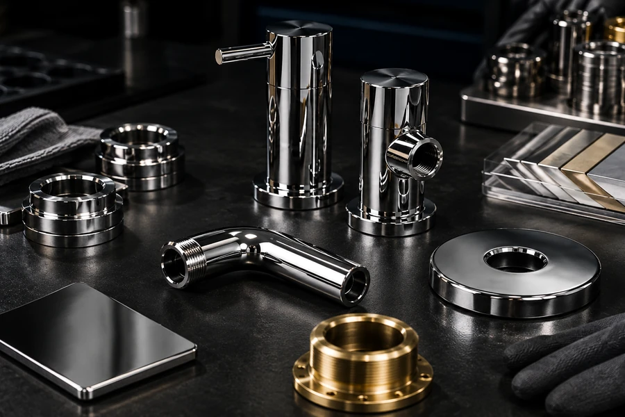
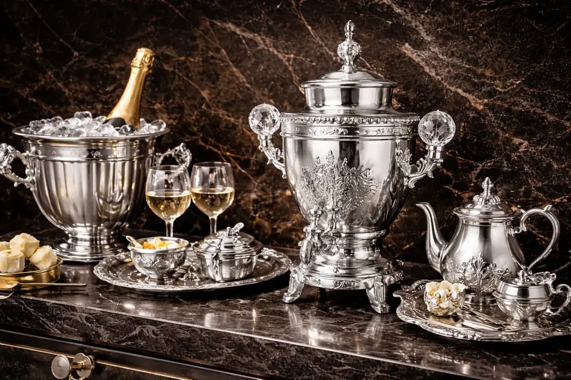
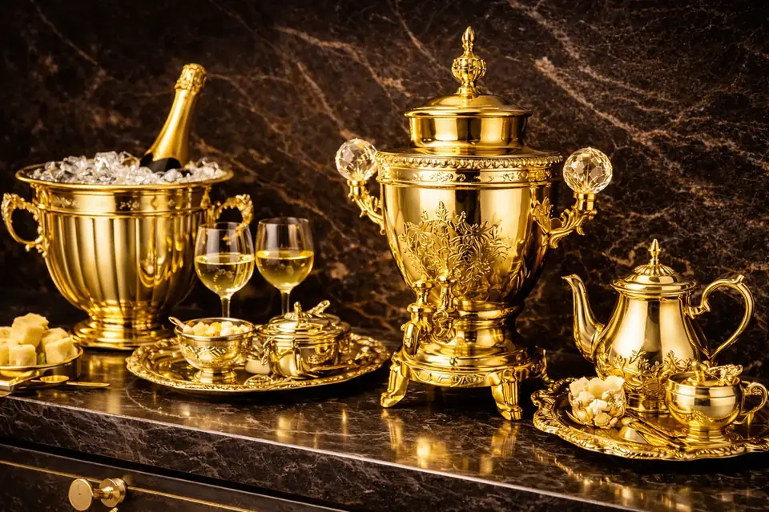

طلایی براق
دکوراتیوبرای یراق، اکسسوری و قطعاتی که انعکاس و ظاهر لوکس اولویت دارد.
- کاربرد نزدیک
- یراق و قطعات تزئینی
- قبل از تیراژ تأیید شود
- مرجع رنگ + میزان براقیت + وضعیت سطح
رنگ عکس نقطه شروع است؛ تصمیم نهایی باید با جنس قطعه، کیفیت زیرسازی، میزان براقیت و شرایط کاربرد هماهنگ شود. نمونهها را با همین منطق مقایسه کنید.
این کارتها Specification فنی نیستند؛ کمک میکنند قبل از ارسال قطعه، هدف ظاهری و اطلاعات لازم را دقیقتر تعریف کنید.
برای یراق، اکسسوری و قطعاتی که انعکاس و ظاهر لوکس اولویت دارد.

برای پروژههایی که رنگ گرم با بازتاب کنترلشده و ظاهر آرامتر میخواهند.

برای قطعاتی با ظاهر مدرن که رنگ تیره باید با کاربرد واقعی قطعه هماهنگ شود.

برای پروژههایی که ظاهر خنثی، روشن و سازگار با طراحی مدرن مدنظر است.
این جفت تصویر فقط تغییر بصری فینیش را نشان میدهد. در فایل عمومی این نمونه، جنس پایه، پارامترهای فرآیند، تیراژ، آزمونها و داده دوام ثبت نشده است؛ بنابراین از تصویر، ادعای عملکرد فنی استخراج نمیکنیم.
در این نمونه فقط تغییر بصری فینیش از نقرهای به طلایی مستند است.
جنس زیرکار، Recipe، ضخامت، شرایط آزمون و تیراژ در داده عمومی موجود نیست.
نمونه همان قطعه، فینیش مرجع و معیار پذیرش باید قبل از تعمیم نتیجه مشخص شوند.
در حال حاضر فقط تغییر ظاهری فینیش قابل مشاهده است. دادههای جنس پایه، Recipe، ضخامت، آزمون و تیراژ در فایل عمومی موجود نیست و از تصویر به آنها تعمیم نمیدهیم.
این ماتریس عمداً دادهٔ ناموجود را خالی یا فرضی پر نمیکند؛ هدف آن جداکردن شواهد واقعی از اطلاعاتی است که برای تصمیم فنی بعدی هنوز لازماند.


برای اینکه یک نمونهکار بتواند مبنای تصمیم فنی باشد، این شش گروه داده باید تا حد امکان ثبت شوند. نمونههای فعلی فقط در بخشهایی که داده داریم ادعا میکنند.
جنس، ابعاد، وضعیت اولیه سطح و پوشش قبلی.
رنگ، براقیت، کاربرد و معیار پذیرش مورد انتظار.
آمادهسازی، ماسککاری و نوع فرآیند در سطحی که قابل انتشار است.
بازرسی ظاهری و هر آزمون توافقشده برای همان پروژه.
نمونه، بچ آزمایشی یا تیراژ؛ بدون تبدیل یک نمونه به ادعای عمومی.
آنچه اندازهگیری شده، آنچه صرفاً مشاهده شده و دادهای که منتشر نشده است.
این چارچوب برای نمونههای جدید استفاده میشود تا Portfolio بهتدریج از گالری تصویر به آرشیو شواهد پروژه تبدیل شود.
نور محیط، نمایشگر، جنس پایه و کیفیت پولیش روی برداشت بصری اثر میگذارند. برای پروژه حساس، مرجع فیزیکی یا نمونهسازی پیش از تیراژ مسیر مطمئنتری است.
خام، پولیششده، آبکاریشده یا دارای پوشش قبلی بودن قطعه مهم است.
طلایی بودن یک موضوع است؛ آینهای، براق، ساتن یا مات بودن موضوع دیگر.
تماس دست، رطوبت، شوینده، سایش و دما میتوانند مسیر انتخاب را تغییر دهند.
اگر رنگ مرجع یا نمونه فیزیکی دارید، همان ابتدا ذکر کنید تا مسیر بررسی کوتاهتر و دقیقتر شود.